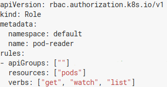
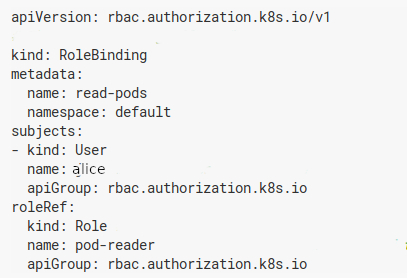
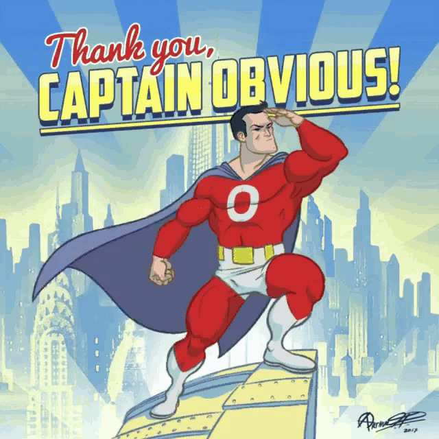
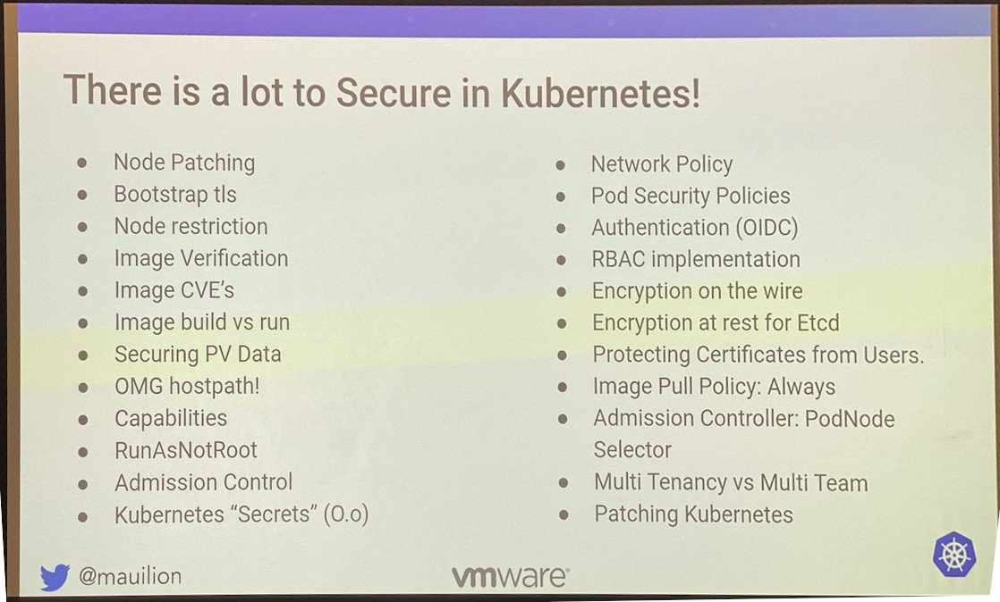
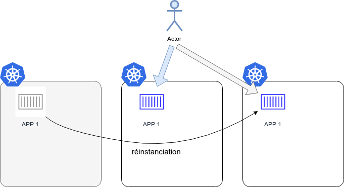
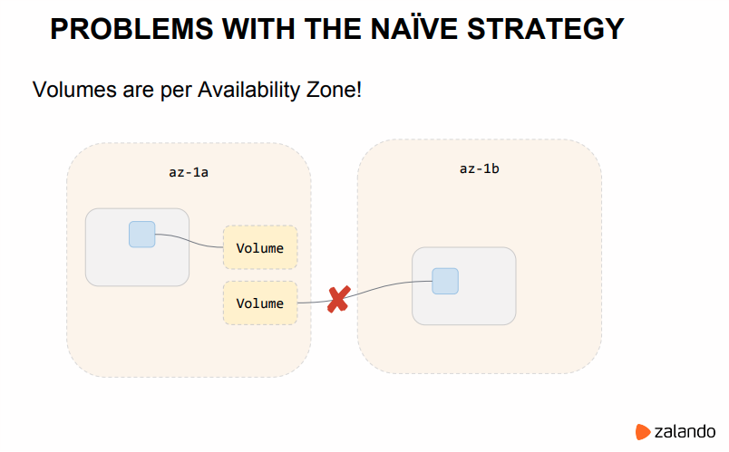

Denis GERMAIN
Ingénieur Cloud chez
Auteur principal sur blog.zwindler.fr*
@zwindler / @zwindler_rflx
#geek #SF #courseAPied
*Les slides de ce talk sont sur le blog
Leader mondial des solutions technologiques intégrées pour les entreprises utilisatrices de cuir ou textile
Un·e OPS pour créer des clusters dans le cloud
Et des Devs pour les casser faire scaler
Et plus encore
GOTO ➔ https://www.lectra.com/fr/carrieres/europe
Crédits : Dmitriy Paunin
Technologie de containerisation d'applications
Techniquement : on a réinventé les jail avec une interface de management "simple" et des images préconfigurées
jail
Mais on ne sait toujours pas comment gérer :
Orchestrateur de containers, inspiré par un outil interne de Google
Donné à la CNCF (spin-off Linux Foundation)
Open Sourcé en 2015
Kubernetes définit un certain nombre d'objets qui, ensemble, fournissent des mécanismes pour déployer, maintenir et mettre à l’échelle des applications
Lancer nginx dans Docker Versus dans Kubernetes
L'histoire récente regorge de failles et d'exploits sur des interfaces de management ouvertes sur Internet
phpMyAdmin
tomcat-manager
webmin
...
The hackers had infiltrated Tesla’s Kubernetes console which was not password protected / Source : redlock.io
Vraiment.
N'exposez pas la console. Ne la déployez même pas.
kubectl
Depuis la 1.6 (2017), RBAC (Role-based access control) par défaut
Appliquez le principe de moindre privilège
       
Ex. alice a le droit de lister les containers dans le namespace default, mais pas de les supprimer ni les créer.
Si un compte utilisateur/application est compromis, les accès de l'attaquant seront limités à un périmètre donné :
Le principe des moindres privilèges est un vrai chantier
Pour auditer le RBAC :
kubectl auth can-i
kubectl who-can
Tous les flux doivent être chiffrés, en particulier ceux de Kubernetes lui-même (api-server, etcd, ...)
Point Captain Obvious : Si les flux ont été chiffrés, il sera plus difficile de récupérer des identifiants
A quick Shodan search shows that show that more than 2,000 Docker engines are insecurely exposed to the Internet -- unit42 : Graboid
Pas d'API ouvertes sur Internet !
Par défaut, la gestion du réseau virtuel dans Kubernetes autorise tout container à se connecter à n'importe quel autre.
              
Monzo Bank a mis en place des Network Policies pour la totalité de ses 1500 microservices :
Mettre en place des Network Policies peut être complexe...
... mais on peut faire encore plus complexe !
Sysadmins/Devs: "It's secure because it's in a container"
Hackers: @sylvielorxu
Kubernetes utilise (pour l'instant) la table des users ID de l'hôte
Si le binaire contenu dans l'image Docker est lancé en tant que root (souvent le cas), un attaquant a plus de chance de sortir du container.
Kubecon EU 2018: The route to Rootless Containers
Kubernetes permet l'ajout de politiques de conformités, notamment dans le but d'imposer des règles pour les Pods
# Required to prevent escalations to root. allowPrivilegeEscalation: false runAsUser: # Require the container to run without root privileges. rule: 'MustRunAsNonRoot'
Limiter l'impact d'une compromission :
ping
traceroute
gcc
Des CVE sortent sur NodeJS, .Net et autre JVM toutes les semaines
Les images de bases de vos containers sont bourrées de failles
Interface affichant les failles détectées sur chaque image
Rajouter des quality gates côté Intégration Continue pour bloquer les images qui ne répondent pas aux exigences de sécurité
Il existe aussi des Intrusion Detection System pour Kubernetes
Falco is an open source project for intrusion and abnormality detection for Cloud Native platforms
JW Player : How A Cryptocurrency Miner Made Its Way onto Our Internal Kubernetes Clusters
Comme tout logiciel, Kubernetes a des failles !
Début aout, la CNCF a commandé un audit du code de Kubernetes
Deux autres grosses CVE sont sorties récemment

... en vrai, c'est pas forcément simple
Kubecon EU 2018 - Zalando Continuously Deliver your K8s Infra

Ne déployez pas Kubernetes si vous n'en avez pas besoin !
Il y a beaucoup de choses à sécuriser dans Kube
Formez vos Dev, pas seulement les Ops !
Sécurisez dès le début
Outil qui permet d'empaqueter une application et ses dépendances. Elle pourra être exécuté sur n'importe quel serveur
Pratique si on déploie souvent de "petites" applications, en cycle (très) courts
L'application devient immuable
blog.zwindler.fr / Should we have containers ?

Zalando a des clusters avec des données... qui ne veulent pas migrer !
